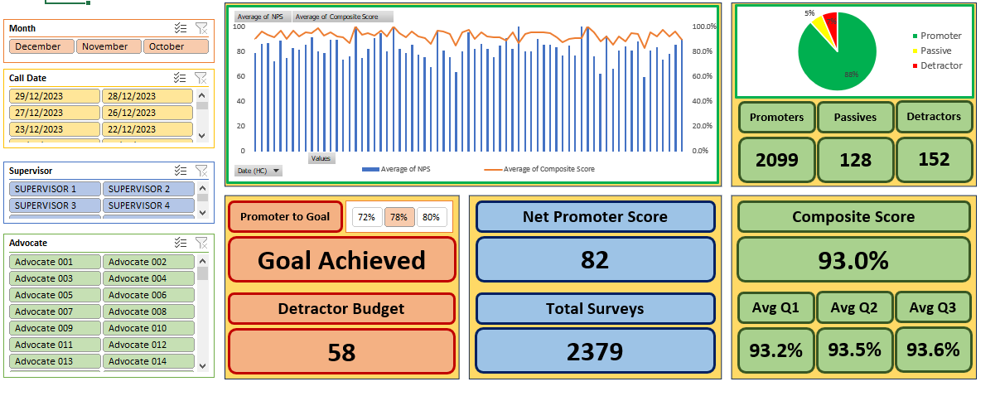
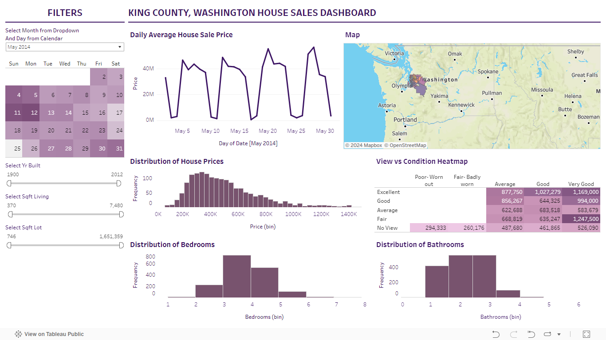

In this project, I meticulously curated and refined a vast dataset on housing using Microsoft SQL Server.
Through systematic data cleansing techniques, I transformed raw, disparate information into a cohesive,
high-quality dataset ready for in-depth analysis.

Within this project, I designed and implemented a dynamic dashboard tailored for monitoring survey
data within a call center environment. By leveraging intuitive visualizations,
the dashboard illuminates trends, offers granular insights into survey scores,
and provides key metrics on survey completion rates essential for meeting performance targets.

Data Exploration of COVID 19 Dataset in Microsoft SQL Server.

You can view my Tableau Vizzes in my Tableau Public page.